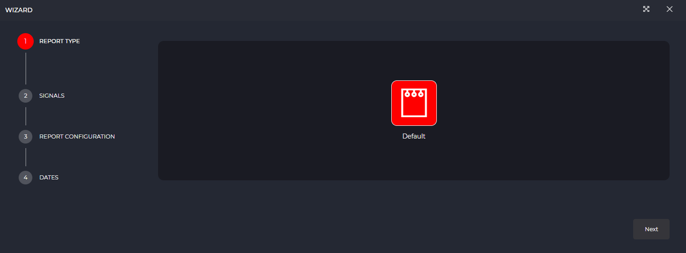

Informes
- 1 Introducción
- 2 Creación de informes
- 2.1 Configuración inicial
- 2.1.1 Comienzo rápido
- 2.1.2 Asistente de personalización
- 2.2 Guardado de documento
- 2.1 Configuración inicial
- 3 Visualización de informes
- 4 Diseño de informes
1. Introducción
Los informes permiten generar visualizaciones personalizadas sobre eventos o hechos ocurridos en un conjunto de datos determinado sobre un intervalo de fechas seleccionado. A lo largo de esta sección se muestra cómo realizar su creación, diseño y posterior visualización a través de IDbox.
2. Creación de informes
La creación de informe permite generar un documento almacenado en IDbox que posteriormente puede ser visualizado o editado.
2.1 Configuración inicial
Para comenzar la creación de un informe existen dos métodos de acceso que a continuación se describen.
2.1.1 Comienzo rápido
Si ya tenemos el conjunto de señales deseado previamente seleccionado en la herramienta “Selección de señales”, utilizar esta opción es la forma más sencilla de crear un informe. Como se muestra en la siguiente imagen, tan solo es necesario acceder a la selección desde la barra superior de la web, ajustar el intervalo de fechas deseado y hacer clic sobre el botón “Informes”.
2.1.2 Asistente de personalización
Si se desea contar una mayor personalización, el asistente de creación de informe permite introducir una configuración más específica de manera guiada. Para ello, debe accederse al apartado de informes tal y como se visualiza en la imagen que se muestra a continuación. Si ya hubiera algún informe abierto sería necesario pulsar además sobre “Nuevo informe”.
Como se observa en la siguiente imagen, el asistente de creación de informes permite navegar a lo largo de tres pasos, que se describen a continuación, para completar la configuración.

- Tipo de informe: permite seleccionar un informe personalizado que haya sido implementado y cargado anteriormente. El tipo de informe por defecto se encuentra siempre disponible e incluye como fuentes de datos la información de señal(es) e histórico(s) así como los parámetros de “fecha inicio” y “fecha fin”.
- Señales: en este punto es posible incluir las señales deseadas en el nuevo informe mediante el selector de señales.
- Configuración del informe: permite seleccionar la marca de datos para el documento así como la configuración de interpolación, estadístico y unidades para cada señal.
- Fechas: a través del selector de fechas es posible definir el intervalo temporal sobre el que estará basado el informe, bien proporcionando un rango fijo que se mantiene permanentemente o dinámico que se recalcula para cada apertura del informe.
2.2 Guardado de documento
Una vez configurado el informe con uno de los dos métodos presentados anteriormente, la creación termina con el guardado del documento. Para ello es necesario introducir un nombre, y opcionalmente la ubicación, en el diálogo que a continuación se muestra.

3. Visualización de informes
Aquellos documentos que hayan sido guardados pueden ser accedidos posteriormente desde el explorador de IDbox. Una vez localizado, es suficiente con hacer clic sobre el documento o hacer clic sobre la acción “Abrir”.
Tras esta acción, la visualización del informe se mostrará en pantalla observando las distintas partes que se muestran en la imagen y se describen seguidamente.

- Acciones: permite consultar el título del informe, y hacer uso de distintas operaciones: generar enlace, abrir documento, descargar y exportar informe, imprimir informe, refrescar informe, fijar como págna de inicio, acceder a la documentacion, crear una suscripción, pantalla completa, extraer pantalla y cierre del documento.
- Herramientas: permite modificar los valores del intervalo de fechas (inicio y fin), importar una versión actualizada del diseño del informe o realizar una búsqueda.
- Visor: ofrece una vista del informe renderizado según el diseño guardado anteriormente.
4. Diseño de informes
El diseñador permite personalizar el documento de informe añadiendo, eliminando o modificando los distintos componentes disponibles sobre el lienzo. El fichero fuente, exportable desde la visualización, sigue la definición RDL/RDLC siendo compatible con los siguientes editores:
- Bold Reports Standalone Designer: Editor gratuito distribuido por Bold Reports (Syncfusion). Compatibles versiones menores o iguales a 3.1.43. >> Disponible en sitio web de Bold Reports
- Microsoft RDLC Report Designer: Editor gratuito distribuido por Microsoft. >> Disponible en centro de descargas de Microsoft
Aunque el uso de cada diseñador puede variar, generalmente se identifican las siguientes áreas que se muestran en la siguiente imagen y describen a continuación.
- Acciones: a lo largo de este panel es posible aplicar distintas operaciones como deshacer, rehacer, guardar, abrir documento, previsualizar informe o ajustes de visualización.
- Componentes: se encuentran todos los componentes disponibles para incluir en el informe, cuyas instrucciones de uso se describen en la documentación de cada editor.
- Lienzo: se divide en varias secciones a las que es posible arrastrar los componentes disponibles. Una vez añadidos al lienzo pueden desplazarse para crear la distribución y diseño deseado.
- Propiedades: cada uno de los elementos seleccionados desde el lienzo cuentan con una serie de propiedades que pueden ajustarse en el panel derecho para modificar sus estilos, comportamiento o nomenclatura.